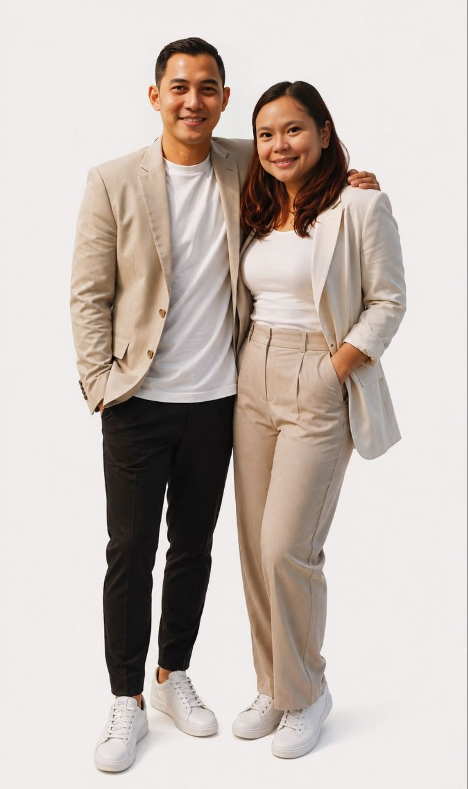
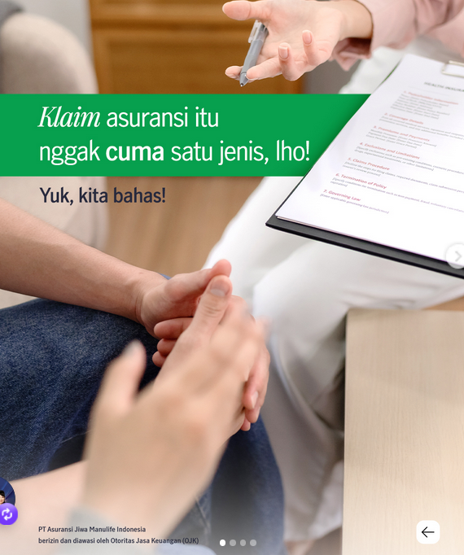
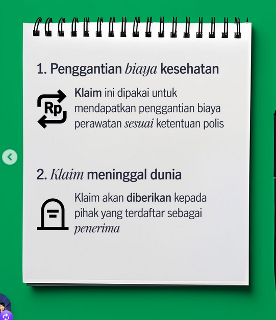
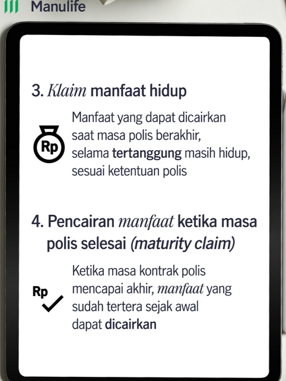

10 Tahun Lebih Pengalaman
Lebih dari satu dekade mengawal keluarga Indonesia dalam merencanakan masa depan finansial yang lebih baik dan aman.
Selama 10 tahun lebih di industri asuransi, saya membantu nasabah memilih proteksi kesehatan, jiwa, dan penyakit kritis ,tabungan pendidikan sesuai prioritas serta kemampuan finansial.
Analisis kebutuhan keluarga dan risiko finansial utama.
Rekomendasi plan yang realistis dan mudah dipahami.
Pendampingan saat review polis hingga proses klaim.

Lebih dari sekadar agen asuransi, saya adalah partner dalam perjalanan finansial Anda.
Lebih dari satu dekade mengawal keluarga Indonesia dalam merencanakan masa depan finansial yang lebih baik dan aman.
Saya berusaha mendengarkan, mencatat detail dari klien, untuk memberikan saran dan pelayanan yang komplit.
Saya tidak hanya menjual produk, tetapi mengedukasi klien agar mereka memahami setiap keputusan finansial yang dibuat.
Setiap orang berdoa untuk keselamatan, tetapi kita perlu mempersiapkan keselamatan itu juga
Petrus Jakub, Partner Bisnis Manulife
Seluruh penghargaan ini diberikan oleh komite MDRT (Million Dollar Round Table), asosiasi global profesional asuransi jiwa dan jasa keuangan yang memiliki standar etika, kompetensi, dan kinerja tinggi. Bagi agen asuransi, pengakuan MDRT penting karena mencerminkan kredibilitas, konsistensi pelayanan nasabah, serta komitmen terhadap kualitas advice jangka panjang.
Million Dollar Round Table, pengakuan internasional untuk profesional asuransi jiwa dan jasa keuangan.
Produk ada banyak, tapi kalau saya pilih, mungkin ini sih.
Anda dan keluarga yang menginginkan proteksi menyeluruh terhadap 50 penyakit kritis dengan pengembalian premi.
Individu ataupun keluarga yang menginginkan perlindungan kesehatan komprehensif dan cashless.
Tidak menemukan produk yang sesuai?
Hubungi SayaRingkasan berikut membantu Anda mengenali fungsi utama setiap produk sebelum berdiskusi lebih lanjut.
Informasi di atas adalah ringkasan edukatif. Manfaat, pengecualian, masa pertanggungan, biaya, dan syarat lengkap mengikuti polis serta Ringkasan Informasi Produk dan Layanan resmi Manulife.
Isi 7 pertanyaan singkat ini untuk menemukan gambaran produk yang bisa jadi bahan diskusi saat konsultasi.
Hasil QnA (for fun)
Tanya lebih lanjut via WhatsAppWalaupun namanya sama-sama asuransi, namun ada beberapa jenis asuransi sesuai dengan ketentuan polisnya.



Klaim untuk mengganti biaya perawatan sesuai manfaat dan ketentuan polis.
Manfaat diberikan kepada pihak yang terdaftar sebagai penerima manfaat.
Manfaat yang dapat dicairkan saat tertanggung masih hidup sesuai ketentuan polis.
Pencairan manfaat ketika masa kontrak polis selesai dan manfaat sudah tertera sejak awal.